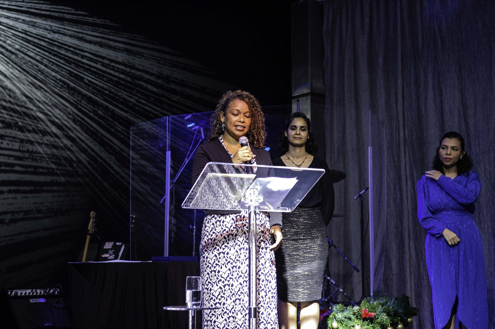
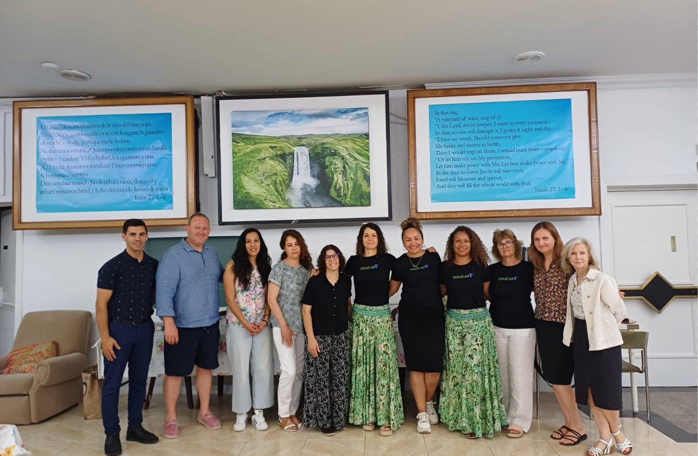

Youth Mental Health
#1 cause of non-natural death among Spanish youth 15–29 is suicide. Purpose and belonging are urgently needed.
INE 2023
Church-Centered Community Impact
Chanak Foundation helps churches and mission-aligned partners activate practical local initiatives for children, youth, and families—through structured life skills, adult education, scholarship programs, and donor-funded community hubs.
Faith-driven | Community-based | Education-centered | Scalable impact
PROOF OF CONCEPT
In 2020, Chanak's founding team helped launch the Philadelphia International School inside a local church in Panama City. In four years, it grew from 5 to 165 students — a nationally recognized model of faith-integrated education and family empowerment. Now we're applying that same proven model to Spain's Costa Blanca and broader communities.

The Need in Spain
#1 cause of non-natural death among Spanish youth 15–29 is suicide. Purpose and belonging are urgently needed.
INE 2023
1 in 4 students affected by school harassment, requiring safe, supportive learning environments.
Defensor del Pueblo
Private values-based education is often financially inaccessible. We deliver accessible, mission-supported community learning hubs for families.
Community Hubs
Inside local churches. Academically rigorous. Financially accessible.
Founding Families Open Enrollment
Visionary Family: Medalith & Juan Carlos
Founding Families Open Enrollment
Visionary Family: Mary Claudia & Henry
Formation Pathway for Youth
We don't just form students. We form purpose-driven leaders.
Identity, character roots, emotional foundations, first service.
Vocational discovery, purpose formula, teamwork & empathy.
Real leadership projects, financial literacy, problem-solving.
Capstone project, university portfolio, college readiness & mentorship.
Lifelong Learning
Empowering parents and community adults with practical tools for family leadership, digital literacy, conversational English, and vocational advancement. Through weekend workshops and church-hosted classes, we strengthen the family foundation.

Academic Inclusion
Through our philanthropic scholarship fund, students in Spanish-speaking communities can earn an accredited American High School Diploma simultaneously with their local studies, opening global university pathways through subsidized tuition and dedicated bilingual faculty.
The Need
Many families need practical educational support and trusted guidance close to home. Youth need purpose, mentoring, and values-based development that helps them grow in character and direction.
Many churches are eager to serve their communities in tangible ways beyond Sunday gatherings, but often need support structures, partner networks, and implementation pathways to do that consistently.
When church spaces, local partnerships, and mission resources are aligned, communities gain a stronger bridge between faith, family support, education, and service.
Our Solution
We align churches, community leaders, and mission partners around practical local priorities and service opportunities.
We help organize church-based learning support, family workshops, leadership pathways, and volunteer coordination.
We connect donations, sponsorships, and local teams to concrete initiatives that serve children, adolescents, and families.
Community Impact in Action



What Your Donation Makes Possible
Prepare and equip church spaces for recurring education support and mentoring.
Provide practical formation sessions that help families support children and teens.
Develop mission-aligned resources for learning, discipleship, and leadership growth.
Create pathways that connect youth purpose, responsibility, and future readiness.
Mobilize church and volunteer teams for local service initiatives and outreach opportunities.
Prepare leaders and volunteers to launch and sustain initiatives with consistency.
A Replicable Model
Join the Mission
Your gift or partnership can help churches serve families, guide youth, and build practical pathways for faith-driven local transformation.